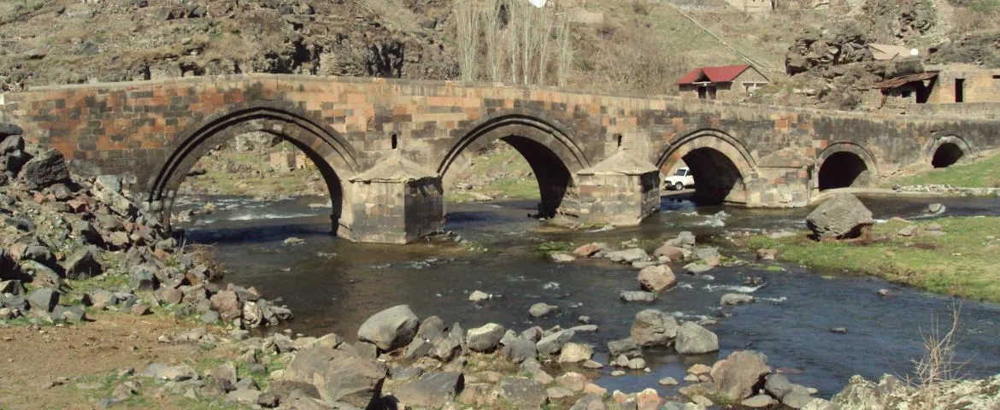
Օշականի միջնադարյան կամուրջը Հայաստանի հինգաչքանի հին կամուրջներից միակն է։ Այն գտնվում է Օշական գյուղից հարավ՝ Քասախ գետի կիրճում, և իրար է կապում գետի աջ և ձախ ափերը։ Կամուրջը տեղակայված է Աշտարակ քաղաքից հարավ-արևմուտք։
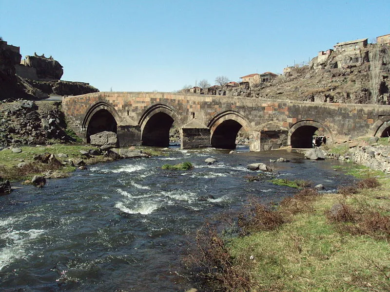
Պատմություն
Օշականի հնգաթռիչք կամուրջը կառուցվել է Քասախ գետի վրա՝ Ամենայն Հայոց կաթողիկոս Նահապետ Եդեսացի հովանավորությամբ։ Շինարարությունը սկսվել է նրա օրոք և ավարտվել է 1706 թվականին՝ արդեն նրա մահից հետո։
Նահապետ կաթողիկոսը հայտնի է եղել իր լայնածավալ շինարարական գործունեությամբ։ Նրա նախաձեռնությամբ կառուցվել են, օրինակ, Շողակաթ եկեղեցին, նաև բազմաթիվ եկեղեցիներ Երևանում և այլ բնակավայրերում։
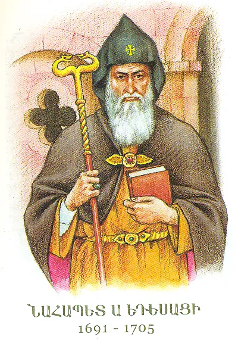
Անցյալում այս կամուրջը հանդիսացել է Օշականը Էջմիածնին կապող գլխավոր ճանապարհը և մինչ օրս պահպանել է իր երթևեկային նշանակությունը։
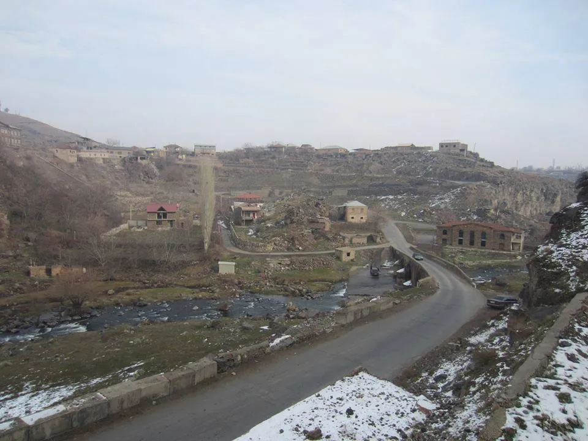
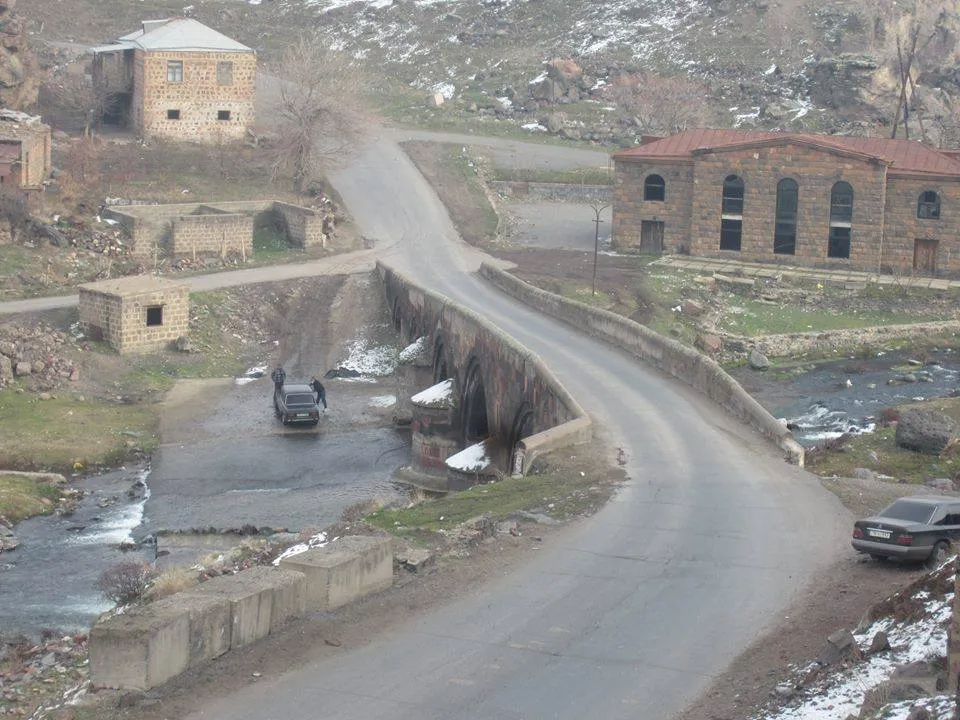
1778 թվականին կամուրջը վերանորոգվել է Ամենայն Հայոց կաթողիկոս Սիմեոն Երևանցու կողմից, ով աչքի է ընկել շինարարական և վերականգնողական գործունեությամբ:
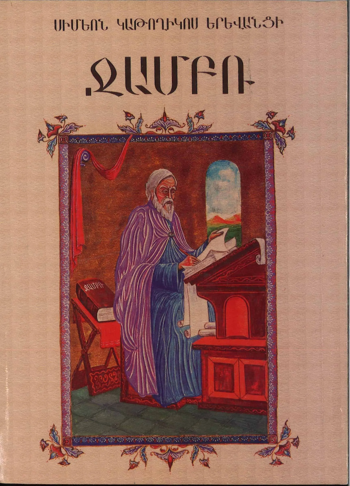
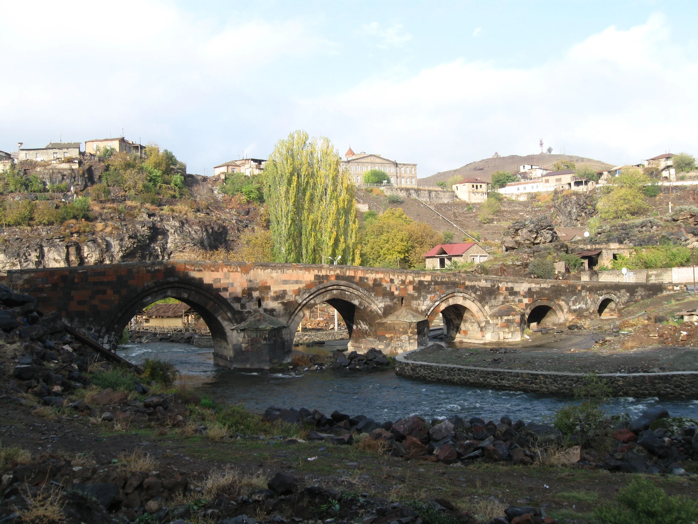
Կամրջի կառուցումն ու հետագա վերանորոգումը պայմանավորված էին Արարատյան դաշտը Արագածոտնի նախալեռնային գյուղերին կապող ճանապարհի անհրաժեշտությամբ, ինչպես նաև Էջմիածնի վանական կալվածքների միջև հաղորդակցություն ապահովելու նպատակով։ Այդ պատճառով էլ նրա շինարարությունը ստանձնել էր վանքը:
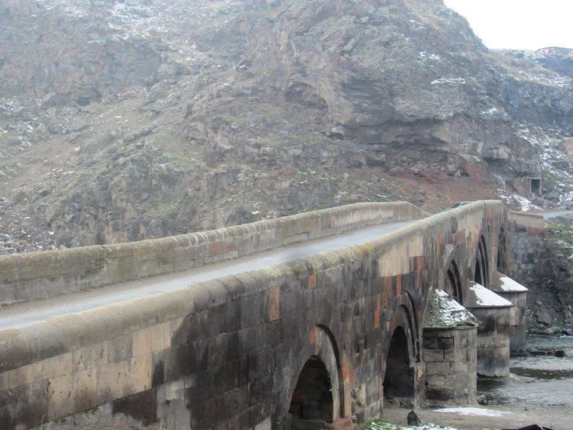
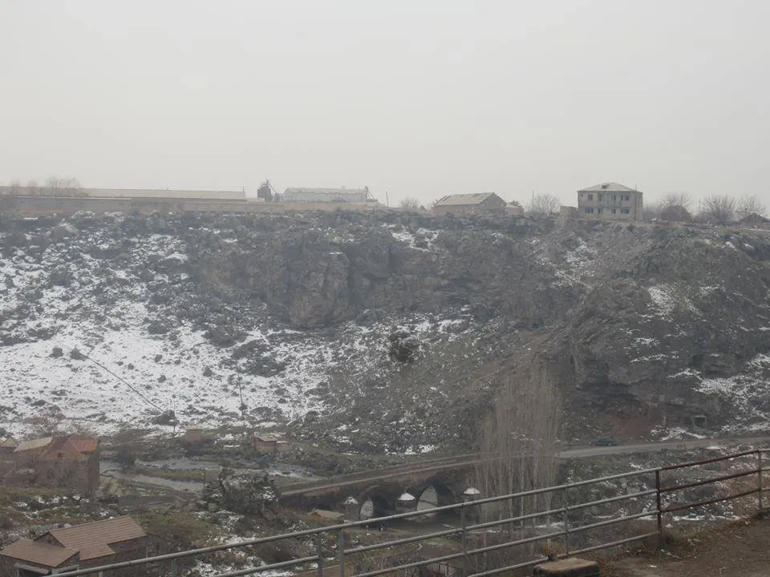
Ճարտարապետություն
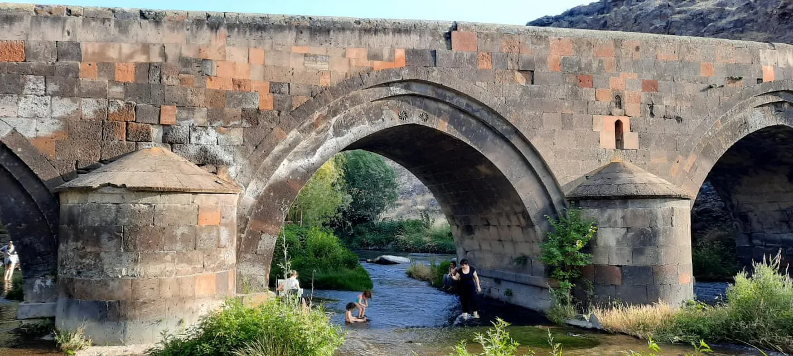
Օշականի կամուրջը բազմաչք քարե կառույց է՝ բաղկացած 5 կամարից։ Այն կառուցված է տեղական կարմիր տուֆից և կրաշաղախից։
Կամարների չափերն ու ձևերը տարբեր են՝ տեղանքի պայմաններին հարմարեցված։ Աջափնյա կամարները կիսաշրջանաձև են, իսկ մյուս երեքը՝ ավելի բարձրացված և սլաքաձև։ Կառույցը ունի թեք կառուցվածք՝ աջ ափից դեպի ձախ ափ բարձրացող։ Սա ապահովում է բնական և հարմար անցում գետի տարբեր բարձրության ափերի միջև։
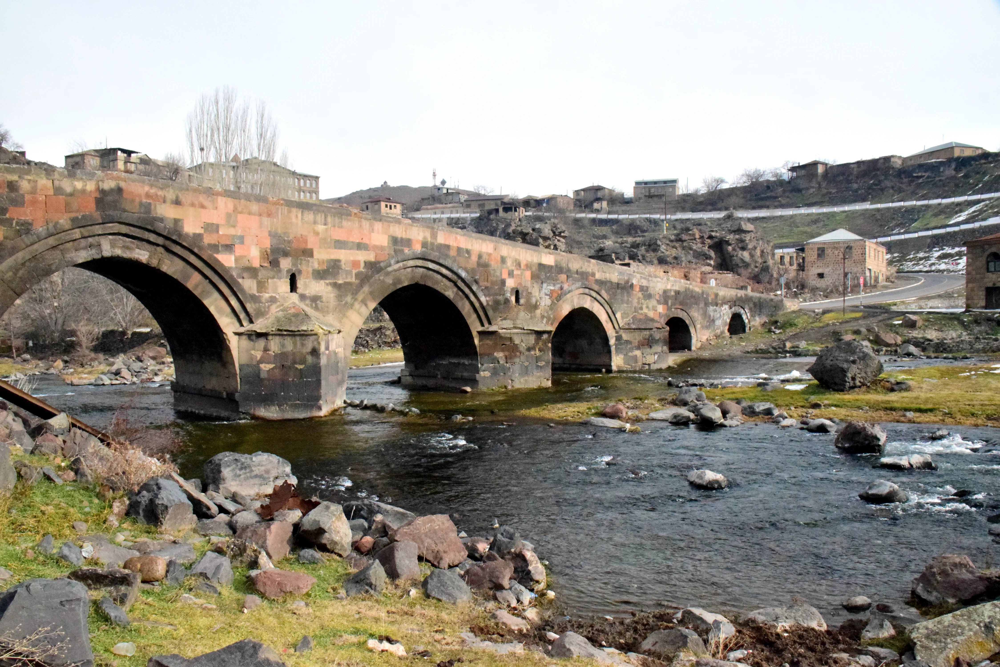
Կամրջի միջին հենարանները ներքևի մասում ունեն սրածայր ելուստներ՝ ուղղված հոսանքի կողմը, ինչը նպաստում է ջրի հոսքի ճիշտ բաշխմանը։ Հետևի մասում դրանք կիսաշրջանաձև են։
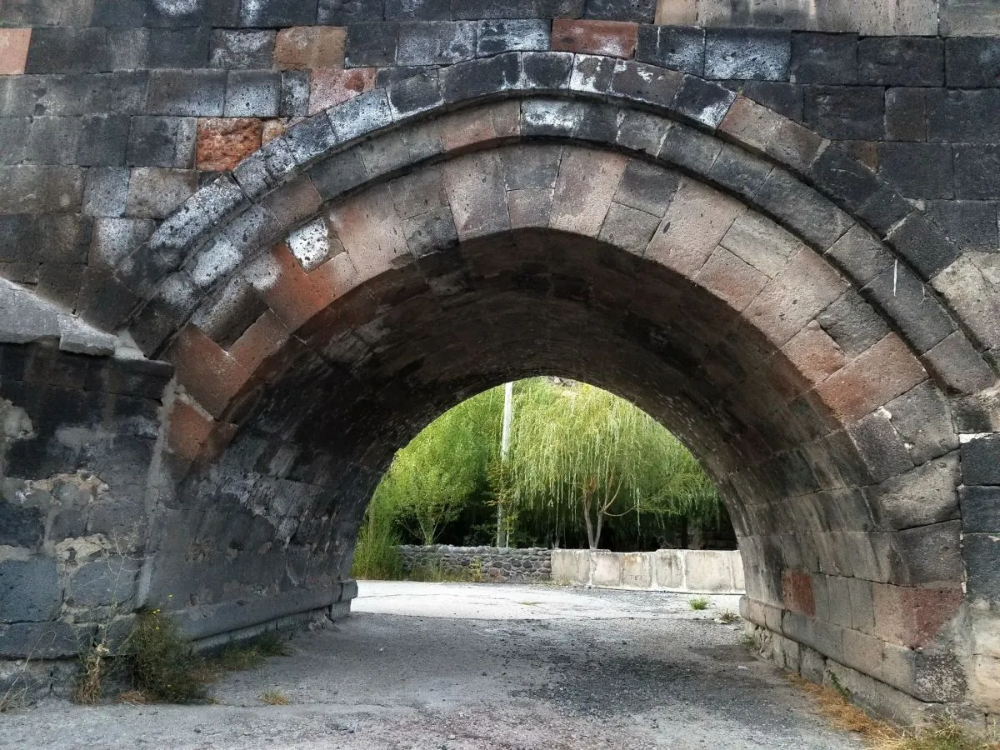
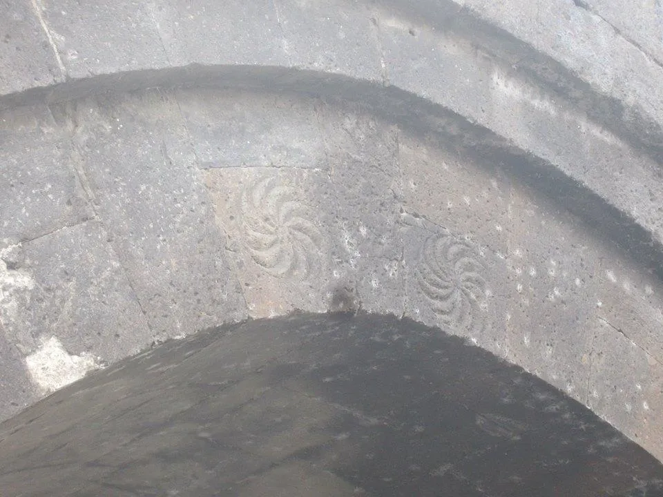
Կամրջային կառուցվածքը հարմարեցված է տեղանքի պայմաններին, ինչի արդյունքում կամարային բացվածքները տարբերվում են թե՛ չափերով, թե՛ ձևերով։ Աջափնյա երկու կամարները (2,5 մ և 3,6 մ) ունեն փոքր-ինչ իջեցված կիսաշրջանաձև տեսք, մինչդեռ երրորդ, չորրորդ և հինգերորդ կամարները սլաքաձև են և ավելի բարձրացված։ Դրանց հենամիջային տարածությունը աստիճանաբար մեծանում է դեպի ձախ ափ։ Այս կառուցվածքային լուծման շնորհիվ կամրջի երթևեկելի մասը գետի ավելի ցածր աջ ափից մեղմ թեքությամբ բարձրանում է դեպի ձախ ափ՝ ապահովելով հարմար անցում։
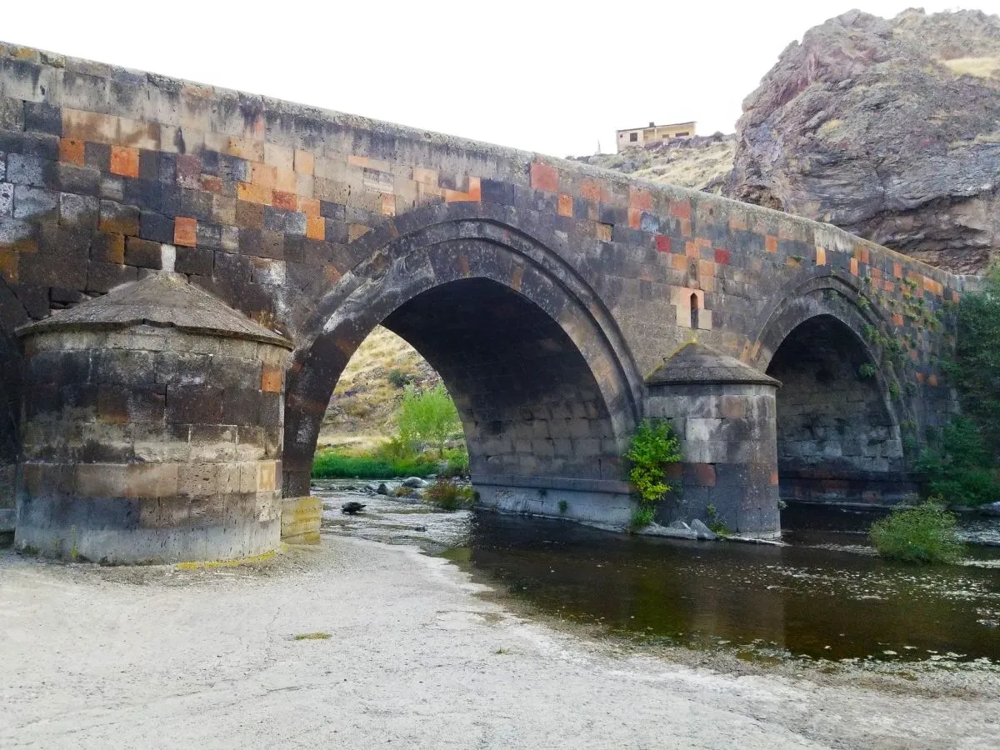
Կամրջի միջին երեք հենարանները ստորին հատվածում ունեն սրածայր ելուստներ՝ ուղղված գետի հոսանքի կողմը, ինչը նպաստում է ջրի հոսքի արդյունավետ բաշխմանը և բարելավում է հիդրավլիկ պայմանները։ Հետևի կողմից այդ նույն հենարանները ձևավորված են կիսաշրջանաձև ելուստներով։
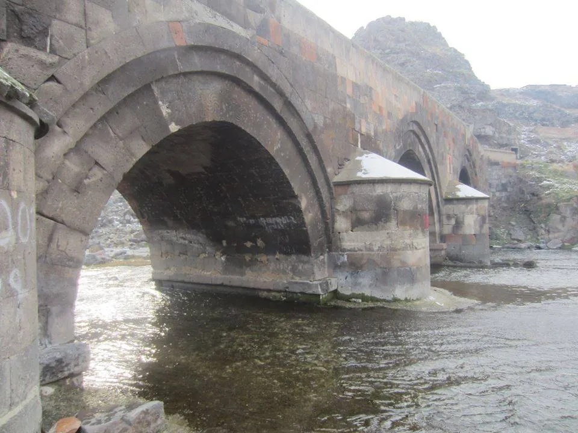
Ձախ ափին մոտ գտնվող հատվածում, երկու հենարաններից վերև՝ ճակատային պատի վրա, առկա են փոքրիկ պատուհաններ, որոնք ունեն ինչպես գործնական, այնպես էլ գեղագիտական նշանակություն։
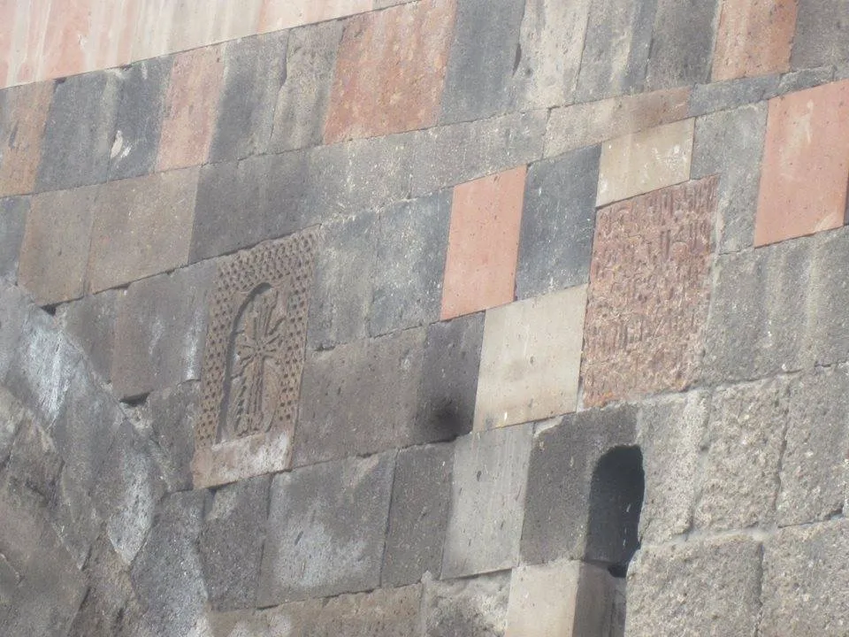
Օշականի հնգաթռիչք կամուրջը կարևոր տեղ է զբաղեցնում հայկական միջնադարյան ճարտարապետության մեջ՝ հանդիսանալով ինժեներական մտածողության և գեղարվեստական լուծումների հաջող համադրություն։ Այն ոչ միայն կատարել է կարևոր հաղորդակցական դեր՝ կապելով բնակավայրերն ու ճանապարհները, այլև մինչև այսօր պահպանել է իր գործառույթը։ Գտնվելով Օշական գյուղի մոտ՝ Քասախ գետի վրա, այս կամուրջը վկայում է անցյալի շինարարների բարձր վարպետության և տեղանքի պայմաններին հարմարվելու ունակության մասին։
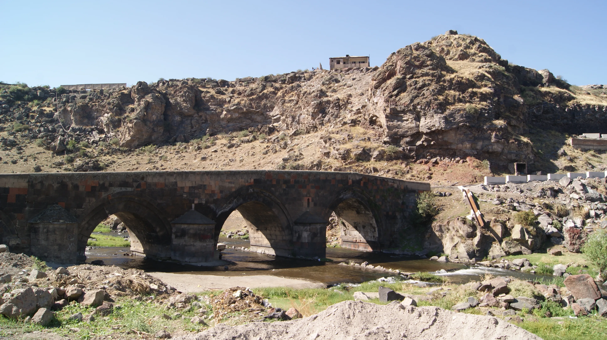
Կամրջի կառուցվածքային յուրահատկությունները, ամրությունը և երկարատև օգտագործումը դարձնում են այն արժեքավոր պատմամշակութային հուշարձան։ Այսօր այս կամուրջը ոչ միայն ծառայում է իր սկզբնական նպատակին, այլև հանդիսանում է զբոսաշրջային հետաքրքիր վայր՝ գրավելով այցելուներին իր պատմությամբ, ճարտարապետությամբ և գեղատեսիլ շրջակայքով։
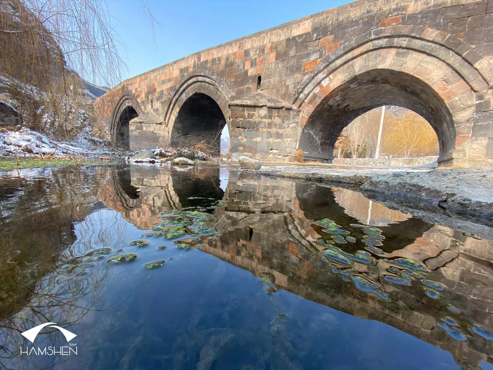